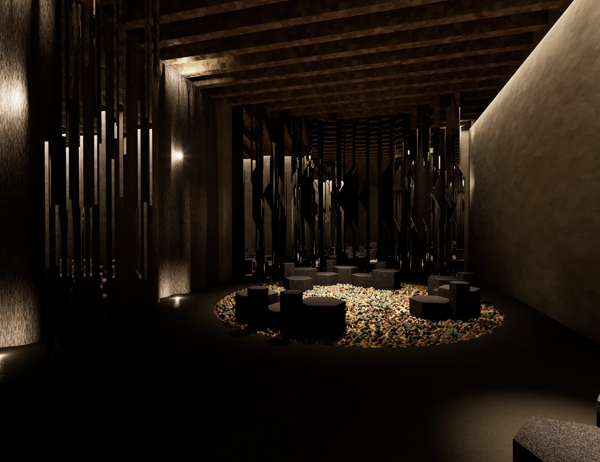
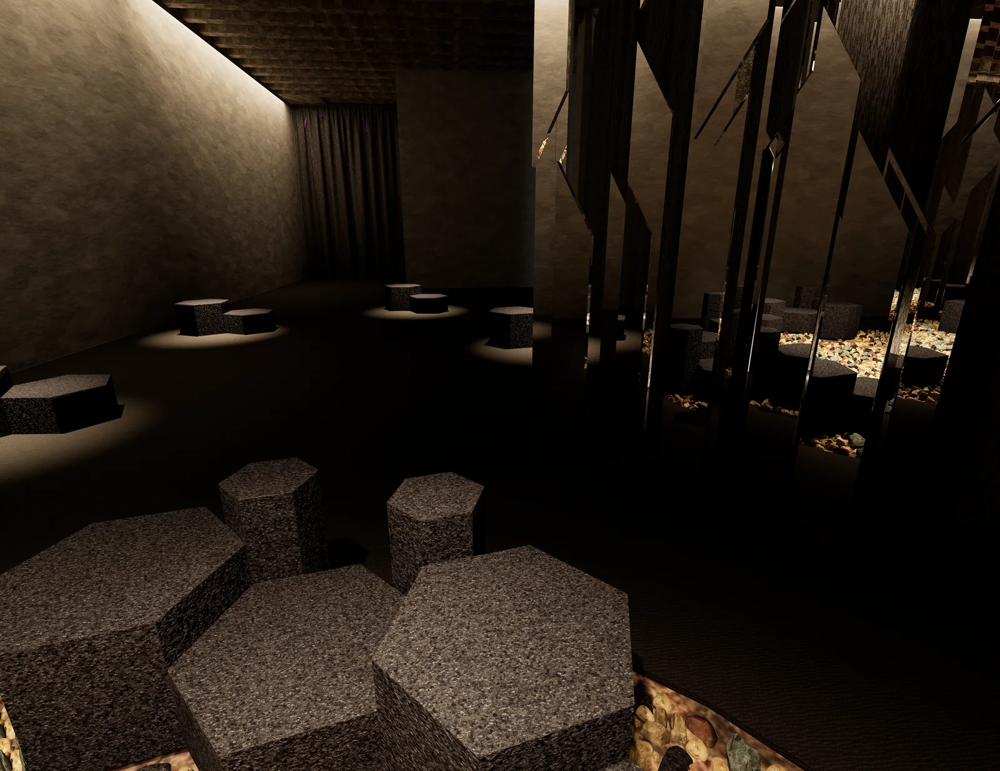
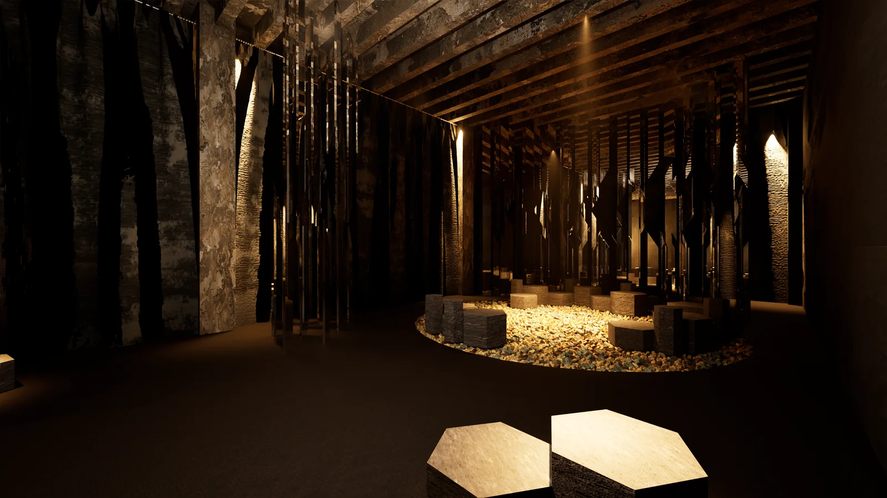
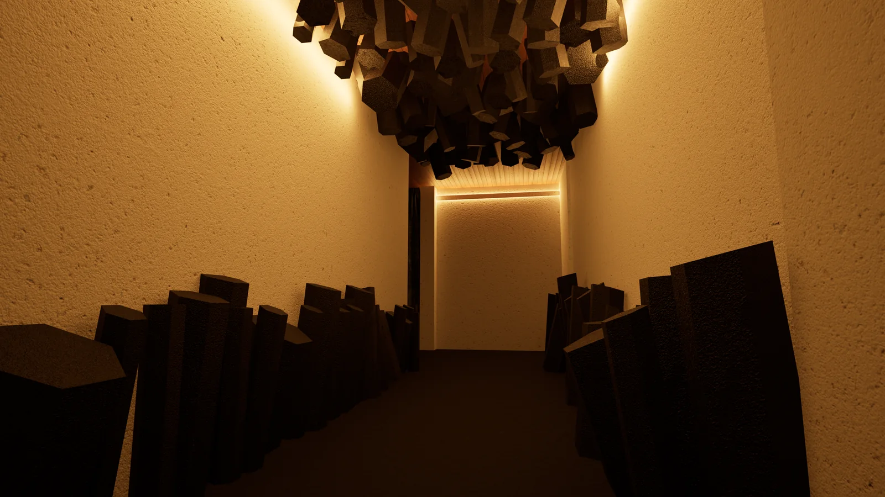
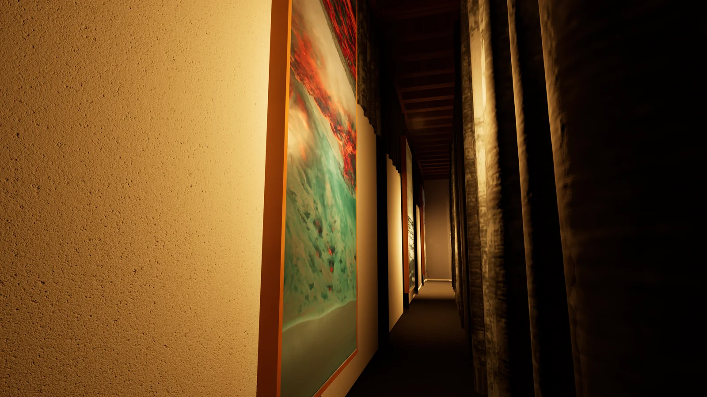
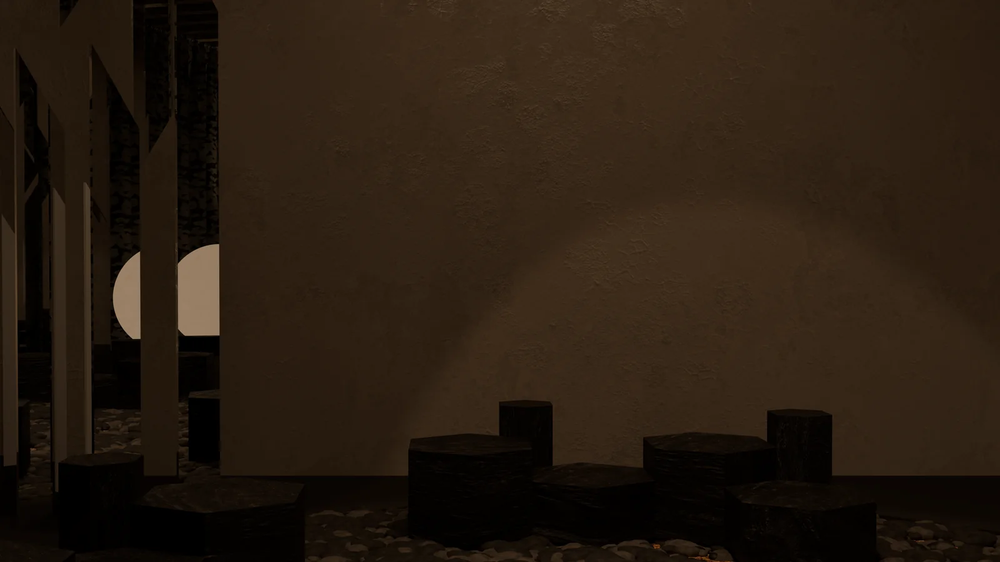

A MATTER OF PRESENCE
La materia si moltiplica nello sguardo.
- Progetto
- Allestimento di POLIEDRO
- Corso
- Laboratorio di sintesi finale
- Sede
- Politecnico di Milano · A.A. 2025/26
- Materiali
- Specchi · pietra · luce
- Gruppo
- Filippo Antonio Visentin, Lawrence Sedra, Anna Varsavia, Nina Rosa Patanè
- Ambito
- Exhibition design · POLIEDRO · 2026
- Collegato
- POLIEDRO →

Quanto può cambiare un oggetto quando cambia lo spazio intorno?
La luce e il riflesso sono materiali di progetto: cambiano la distanza, la scala e il modo in cui ci fermiamo.
L’allestimento di POLIEDRO traduce la presenza del materiale in un’esperienza immersiva. Specchi, penombra e un paesaggio minerale costruiscono uno spazio sospeso tra montagna e interno.
Le superfici riflettenti prolungano i moduli e frammentano i punti di vista. Al centro, una zona di sosta riunisce le persone; tende e luce controllano il rapporto con l’esterno. Il visitatore attraversa la materia prima di leggerla come oggetto.
Un paesaggio interno
L’allestimento racconta POLIEDRO attraverso un’immagine minerale. La materia scura delle sedute, il terreno di pietre e la penombra costruiscono un’esperienza che richiama il paesaggio montano senza riprodurlo letteralmente.


Moltiplicare la presenza
Gli specchi frammentano i punti di vista e moltiplicano i moduli. La zona centrale concentra la sosta e l’incontro; le tende modulano il rapporto con l’esterno. Piante e prospetti chiariscono la relazione tra percorso, quinte e area collettiva.
Processo — fotografie
4 fotografie
F.03La luce sulle sedute 
F.04La soglia 
F.05Il corridoio 
F.06Penombra